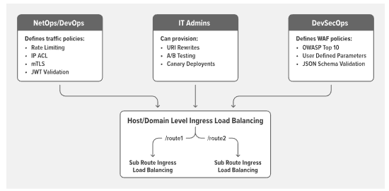
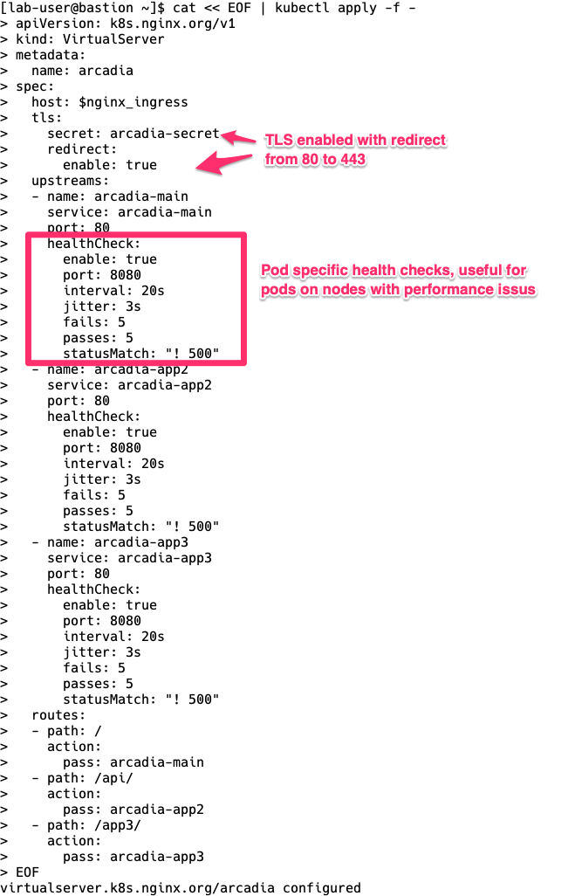
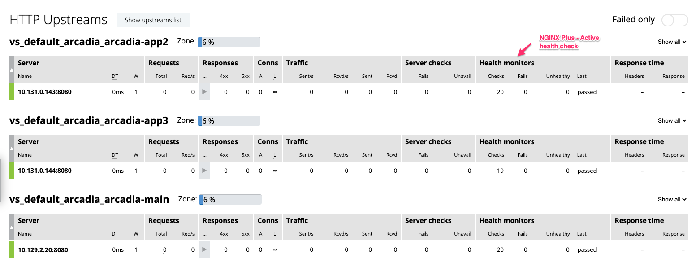
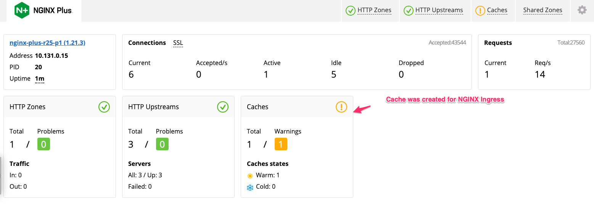
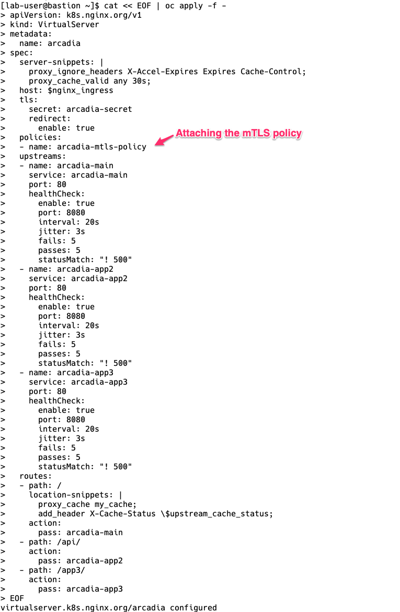
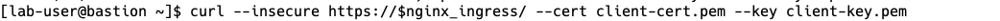

F5 NGINX and Red Hat OpenShift Demo > Class 1: RHPDS Lab - NGINX Kubernetes Ingress Controller For OpenShift > NGINX Kubernetes Ingress Controller For OpenShift Source | Edit on
4. NGINX Kubernetes Ingress Controller | Examples¶
Included below are several examples of NGINX Ingress Controller deployments. It is recommended that you progress through building on top of each other. Going this way highlights the lifecycle of container-based services that will evolve.

The VirtualServer and VirtualServerRoute resources are new load-balancing configurations introduced in release 1.5 as an alternative to the Ingress resource. The resources enable use cases not supported with the Ingress resource, such as traffic splitting and advanced content-based routing. The resources are implemented as Custom Resources.
A custom resource is an extension of the Kubernetes API that is not necessarily available in a default Kubernetes installation. It represents a customization of a particular Kubernetes installation. However, many core Kubernetes functions are now built using custom resources, making Kubernetes more modular.
Custom resources can appear and disappear in a running cluster through dynamic registration, and cluster admins can update custom resources independently of the cluster itself. Once a custom resource is installed, users can create and access its objects using kubectl, just as they do for built-in resources like Pods.
NGINX Ingress Controller Examples:
- Basic: This is a simple layer 7 routing ingress, taking our EXTERNAL-IP address and moving clients to Arcadia Application
- HTTPS: Layer 7 routing ingress with TLS, TLS secret is stored in Kubernetes as a TLS secret
- HTTPS with Active Monitors: HTTPS + Active Health Monitors to Pods
- HTTPS with Active Monitors, Caching: HTTPS + Active Health Monitors + Caching for site content
- HTTPS with Active Monitors, Caching, mTLS: HTTPS + Active Health Monitors + Caching + mTLS for client ca challenge
Basic
Create NGINX Ingress Controller with Basic HTTP:
In the terminal window, copy the below text and paste+enter:
cat << EOF | oc apply -f - apiVersion: k8s.nginx.org/v1 kind: VirtualServer metadata: name: arcadia spec: host: $nginx_ingress upstreams: - name: arcadia-main service: arcadia-main port: 80 - name: arcadia-app2 service: arcadia-app2 port: 80 - name: arcadia-app3 service: arcadia-app3 port: 80 routes: - path: / action: pass: arcadia-main - path: /app2 action: proxy: upstream: arcadia-app2 rewritePath: / - path: /app3 action: proxy: upstream: arcadia-app3 rewritePath: / EOFExample:

NGINX Dashboard should be updated reflecting the new services discovered
NGINX Dashboard URL (replace with the dashboard-nginx-ingress EXTERNAL-IP):
http://EXTERNAL-IP/dashboard.htmlExample:

Arcadia application is now exposed through the NGINX Ingress Controller on HTTP!
NGINX Ingress Controller URL (replace with the nginx-ingress EXTERNAL-IP):
http://EXTERNAL-IP/Example:
HTTPS
Note
There is no change to the Dashboard when using HTTPS. However, the Ingress will now listen on both port 80 and port 443
TLS Secrets stored in Kubernetes can be referenced with NGINX Ingress Controller. First, we need to install them into Kubernetes.
Step 1. Create Kubernetes TLS Secret
In the terminal window, copy the below text and paste+enter:
cat << EOF | oc apply -f - apiVersion: v1 kind: Secret metadata: name: arcadia-secret type: kubernetes.io/tls data: tls.crt: LS0tLS1CRUdJTiBDRVJUSUZJQ0FURS0tLS0tCk1JSURMakNDQWhZQ0NRREFPRjl0THNhWFdqQU5CZ2txaGtpRzl3MEJBUXNGQURCYU1Rc3dDUVlEVlFRR0V3SlYKVXpFTE1Ba0dBMVVFQ0F3Q1EwRXhJVEFmQmdOVkJBb01HRWx1ZEdWeWJtVjBJRmRwWkdkcGRITWdVSFI1SUV4MApaREViTUJrR0ExVUVBd3dTWTJGbVpTNWxlR0Z0Y0d4bExtTnZiU0FnTUI0WERURTRNRGt4TWpFMk1UVXpOVm9YCkRUSXpNRGt4TVRFMk1UVXpOVm93V0RFTE1Ba0dBMVVFQmhNQ1ZWTXhDekFKQmdOVkJBZ01Ba05CTVNFd0h3WUQKVlFRS0RCaEpiblJsY201bGRDQlhhV1JuYVhSeklGQjBlU0JNZEdReEdUQVhCZ05WQkFNTUVHTmhabVV1WlhoaApiWEJzWlM1amIyMHdnZ0VpTUEwR0NTcUdTSWIzRFFFQkFRVUFBNElCRHdBd2dnRUtBb0lCQVFDcDZLbjdzeTgxCnAwanVKL2N5ayt2Q0FtbHNmanRGTTJtdVpOSzBLdGVjcUcyZmpXUWI1NXhRMVlGQTJYT1N3SEFZdlNkd0kyaloKcnVXOHFYWENMMnJiNENaQ0Z4d3BWRUNyY3hkam0zdGVWaVJYVnNZSW1tSkhQUFN5UWdwaW9iczl4N0RsTGM2SQpCQTBaalVPeWwwUHFHOVNKZXhNVjczV0lJYTVyRFZTRjJyNGtTa2JBajREY2o3TFhlRmxWWEgySTVYd1hDcHRDCm42N0pDZzQyZitrOHdnemNSVnA4WFprWldaVmp3cTlSVUtEWG1GQjJZeU4xWEVXZFowZXdSdUtZVUpsc202OTIKc2tPcktRajB2a29QbjQxRUUvK1RhVkVwcUxUUm9VWTNyemc3RGtkemZkQml6Rk8yZHNQTkZ4MkNXMGpYa05MdgpLbzI1Q1pyT2hYQUhBZ01CQUFFd0RRWUpLb1pJaHZjTkFRRUxCUUFEZ2dFQkFLSEZDY3lPalp2b0hzd1VCTWRMClJkSEliMzgzcFdGeW5acS9MdVVvdnNWQTU4QjBDZzdCRWZ5NXZXVlZycTVSSWt2NGxaODFOMjl4MjFkMUpINnIKalNuUXgrRFhDTy9USkVWNWxTQ1VwSUd6RVVZYVVQZ1J5anNNL05VZENKOHVIVmhaSitTNkZBK0NuT0Q5cm4yaQpaQmVQQ0k1ckh3RVh3bm5sOHl3aWozdnZRNXpISXV5QmdsV3IvUXl1aTlmalBwd1dVdlVtNG52NVNNRzl6Q1Y3ClBwdXd2dWF0cWpPMTIwOEJqZkUvY1pISWc4SHc5bXZXOXg5QytJUU1JTURFN2IvZzZPY0s3TEdUTHdsRnh2QTgKN1dqRWVxdW5heUlwaE1oS1JYVmYxTjM0OWVOOThFejM4Zk9USFRQYmRKakZBL1BjQytHeW1lK2lHdDVPUWRGaAp5UkU9Ci0tLS0tRU5EIENFUlRJRklDQVRFLS0tLS0K tls.key: LS0tLS1CRUdJTiBSU0EgUFJJVkFURSBLRVktLS0tLQpNSUlFb3dJQkFBS0NBUUVBcWVpcCs3TXZOYWRJN2lmM01wUHJ3Z0pwYkg0N1JUTnBybVRTdENyWG5LaHRuNDFrCkcrZWNVTldCUU5semtzQndHTDBuY0NObzJhN2x2S2wxd2k5cTIrQW1RaGNjS1ZSQXEzTVhZNXQ3WGxZa1YxYkcKQ0pwaVJ6ejBza0lLWXFHN1BjZXc1UzNPaUFRTkdZMURzcGRENmh2VWlYc1RGZTkxaUNHdWF3MVVoZHErSkVwRwp3SStBM0kreTEzaFpWVng5aU9WOEZ3cWJRcCt1eVFvT05uL3BQTUlNM0VWYWZGMlpHVm1WWThLdlVWQ2cxNWhRCmRtTWpkVnhGbldkSHNFYmltRkNaYkp1dmRySkRxeWtJOUw1S0Q1K05SQlAvazJsUkthaTAwYUZHTjY4NE93NUgKYzMzUVlzeFR0bmJEelJjZGdsdEkxNURTN3lxTnVRbWF6b1Z3QndJREFRQUJBb0lCQVFDUFNkU1luUXRTUHlxbApGZlZGcFRPc29PWVJoZjhzSStpYkZ4SU91UmF1V2VoaEp4ZG01Uk9ScEF6bUNMeUw1VmhqdEptZTIyM2dMcncyCk45OUVqVUtiL1ZPbVp1RHNCYzZvQ0Y2UU5SNThkejhjbk9SVGV3Y290c0pSMXBuMWhobG5SNUhxSkpCSmFzazEKWkVuVVFmY1hackw5NGxvOUpIM0UrVXFqbzFGRnM4eHhFOHdvUEJxalpzVjdwUlVaZ0MzTGh4bndMU0V4eUZvNApjeGI5U09HNU9tQUpvelN0Rm9RMkdKT2VzOHJKNXFmZHZ5dGdnOXhiTGFRTC94MGtwUTYyQm9GTUJEZHFPZVBXCktmUDV6WjYvMDcvdnBqNDh5QTFRMzJQem9idWJzQkxkM0tjbjMyamZtMUU3cHJ0V2wrSmVPRmlPem5CUUZKYk4KNHFQVlJ6NWhBb0dCQU50V3l4aE5DU0x1NFArWGdLeWNrbGpKNkY1NjY4Zk5qNUN6Z0ZScUowOXpuMFRsc05ybwpGVExaY3hEcW5SM0hQWU00MkpFUmgySi9xREZaeW5SUW8zY2czb2VpdlVkQlZHWTgrRkkxVzBxZHViL0w5K3l1CmVkT1pUUTVYbUdHcDZyNmpleHltY0ppbS9Pc0IzWm5ZT3BPcmxEN1NQbUJ2ek5MazRNRjZneGJYQW9HQkFNWk8KMHA2SGJCbWNQMHRqRlhmY0tFNzdJbUxtMHNBRzR1SG9VeDBlUGovMnFyblRuT0JCTkU0TXZnRHVUSnp5K2NhVQprOFJxbWRIQ2JIelRlNmZ6WXEvOWl0OHNaNzdLVk4xcWtiSWN1YytSVHhBOW5OaDFUanNSbmU3NFowajFGQ0xrCmhIY3FIMHJpN1BZU0tIVEU4RnZGQ3haWWRidUI4NENtWmlodnhicFJBb0dBSWJqcWFNWVBUWXVrbENkYTVTNzkKWVNGSjFKelplMUtqYS8vdER3MXpGY2dWQ0thMzFqQXdjaXowZi9sU1JxM0hTMUdHR21lemhQVlRpcUxmZVpxYwpSMGlLYmhnYk9jVlZrSkozSzB5QXlLd1BUdW14S0haNnpJbVpTMGMwYW0rUlk5WUdxNVQ3WXJ6cHpjZnZwaU9VCmZmZTNSeUZUN2NmQ21mb09oREN0enVrQ2dZQjMwb0xDMVJMRk9ycW40M3ZDUzUxemM1em9ZNDR1QnpzcHd3WU4KVHd2UC9FeFdNZjNWSnJEakJDSCtULzZzeXNlUGJKRUltbHpNK0l3eXRGcEFOZmlJWEV0LzQ4WGY2ME54OGdXTQp1SHl4Wlp4L05LdER3MFY4dlgxUE9ucTJBNWVpS2ErOGpSQVJZS0pMWU5kZkR1d29seHZHNmJaaGtQaS80RXRUCjNZMThzUUtCZ0h0S2JrKzdsTkpWZXN3WEU1Y1VHNkVEVXNEZS8yVWE3ZlhwN0ZjanFCRW9hcDFMU3crNlRYcDAKWmdybUtFOEFSek00NytFSkhVdmlpcS9udXBFMTVnMGtKVzNzeWhwVTl6WkxPN2x0QjBLSWtPOVpSY21Vam84UQpjcExsSE1BcWJMSjhXWUdKQ2toaVd4eWFsNmhZVHlXWTRjVmtDMHh0VGwvaFVFOUllTktvCi0tLS0tRU5EIFJTQSBQUklWQVRFIEtFWS0tLS0tCg== EOF
Step 2. Create NGINX Ingress Controller with HTTPS:
In the terminal window, copy the below text and paste+enter:
cat << EOF | oc apply -f - apiVersion: k8s.nginx.org/v1 kind: VirtualServer metadata: name: arcadia spec: host: $nginx_ingress tls: secret: arcadia-secret upstreams: - name: arcadia-main service: arcadia-main port: 80 - name: arcadia-app2 service: arcadia-app2 port: 80 - name: arcadia-app3 service: arcadia-app3 port: 80 routes: - path: / action: pass: arcadia-main - path: /app2 action: pass: arcadia-app2 - path: /app3 action: pass: arcadia-app3 EOFArcadia application is now exposed through the NGINX Ingress Controller on HTTPS!
NGINX Ingress Controller URL (replace with the nginx-ingress EXTERNAL-IP):
https://EXTERNAL-IP/orhttp://EXTERNAL-IP/HTTPS with Active Monitors
NGINX Plus can periodically check the health of upstream servers by sending special health-check requests to each server and verifying the correct response.
Create NGINX Ingress Controller with HTTPS with Active Monitors:
In the terminal window, copy the below text and paste+enter:
cat << EOF | oc apply -f - apiVersion: k8s.nginx.org/v1 kind: VirtualServer metadata: name: arcadia spec: host: $nginx_ingress tls: secret: arcadia-secret redirect: enable: true upstreams: - name: arcadia-main service: arcadia-main port: 80 healthCheck: enable: true port: 8080 interval: 20s jitter: 3s fails: 5 passes: 5 statusMatch: "! 500" - name: arcadia-app2 service: arcadia-app2 port: 80 healthCheck: enable: true port: 8080 interval: 20s jitter: 3s fails: 5 passes: 5 statusMatch: "! 500" - name: arcadia-app3 service: arcadia-app3 port: 80 healthCheck: enable: true port: 8080 interval: 20s jitter: 3s fails: 5 passes: 5 statusMatch: "! 500" routes: - path: / action: pass: arcadia-main - path: /api/ action: pass: arcadia-app2 - path: /app3/ action: pass: arcadia-app3 EOFExample:

NGINX Dashboard should be updated reflecting the active monitors
NGINX Dashboard URL (replace with the dashboard-nginx-ingress EXTERNAL-IP):
http://EXTERNAL-IP/dashboard.html#upstreamsExample:

Arcadia application is now exposed through the NGINX Ingress Controller only on HTTP with monitors!
NGINX Ingress Controller URL (replace with the nginx-ingress EXTERNAL-IP):
https://EXTERNAL-IP/HTTPS with Active Monitors, Caching
A content cache sits in between a client and an origin server, and saves copies of all the content it sees. If a client requests content that the cache has stored, it returns the content directly without contacting the origin server. This improves performance as the content cache is closer to the client and more efficiently uses the application servers because they do not have to generate pages from scratch each time.
Step 1. Create NGINX Ingress Controller Caching Path:
From OpenShift Console, Click Operators -> Installed Operator in the left navigation column. On the page that opens, click the Nginx Ingress Controller link in the Provided APIs column. Select “my-nginx-ingress-controller”, and then click YAML to include the following ConfigMap under Spec:
config: annotations: {} entries: http-snippets: > proxy_cache_path /var/tmp/a levels=1:2 keys_zone=my_cache:10m max_size=100m inactive=60m use_temp_path=off; proxy-protocol: 'True' real-ip-header: proxy_protocol set-real-ip-from: 0.0.0.0/0
In the same yaml file, we also need to add two annotations to the AWS LoadBalancer service. The annonations specify TCP layer 4 proxying: the ELB forwards traffic without modifying the headers.
service: externalIPs: [] customPorts: [] loadBalancerIP: '' annotations: service.beta.kubernetes.io/aws-load-balancer-backend-protocol: tcp service.beta.kubernetes.io/aws-load-balancer-proxy-protocol: '*'
Click Save, and Reload
Step 2. NGINX Dashboard should be updated with the cache location
Example:

Step 3. Create NGINX Ingress Controller with HTTPS with Active Monitors, Caching:
In the terminal window, copy the below text and paste+enter:
cat << EOF | oc apply -f - apiVersion: k8s.nginx.org/v1 kind: VirtualServer metadata: name: arcadia spec: server-snippets: | proxy_ignore_headers X-Accel-Expires Expires Cache-Control; proxy_cache_valid any 30s; host: $nginx_ingress tls: secret: arcadia-secret redirect: enable: true upstreams: - name: arcadia-main service: arcadia-main port: 80 healthCheck: enable: true port: 8080 interval: 20s jitter: 3s fails: 5 passes: 5 statusMatch: "! 500" - name: arcadia-app2 service: arcadia-app2 port: 80 healthCheck: enable: true port: 8080 interval: 20s jitter: 3s fails: 5 passes: 5 statusMatch: "! 500" - name: arcadia-app3 service: arcadia-app3 port: 80 healthCheck: enable: true port: 8080 interval: 20s jitter: 3s fails: 5 passes: 5 statusMatch: "! 500" routes: - path: / location-snippets: | proxy_cache my_cache; add_header X-Cache-Status \$upstream_cache_status; action: pass: arcadia-main - path: /api/ action: pass: arcadia-app2 - path: /app3/ action: pass: arcadia-app3 EOFExample:

Arcadia application is now exposed through the NGINX Ingress Controller only on HTTP with monitors and caching!
NGINX Ingress Controller URL (replace with the nginx-ingress EXTERNAL-IP):
https://EXTERNAL-IP/
HTTPS with Active Monitors, Caching, mTLS
NGINX Ingress Controller can participate in the mTLS cert exchange with services.
By default, the TLS protocol only proves the identity of the server to the client using X.509 certificates, and the authentication of the client to the server is left to the application layer. TLS also offers client-to-server authentication using client-side X.509 authentication. As it requires provisioning of the certificates to the clients and involves a less user-friendly experience, it is rarely used in end-user applications.
Mutual TLS authentication (mTLS) is much more widespread in business-to-business (B2B) applications, where a limited number of programmatic and homogeneous clients are connecting to specific web services, the operational burden is limited, and security requirements are usually much higher as compared to consumer environments.
Step 1. Create the Arcadia mTLS secret in Kubernetes:
In the terminal window, copy the below text and paste+enter:
cat << EOF | oc apply -f - kind: Secret metadata: name: arcadia-mtls-secret apiVersion: v1 type: nginx.org/ca data: ca.crt: LS0tLS1CRUdJTiBDRVJUSUZJQ0FURS0tLS0tCk1JSUQvVENDQXVXZ0F3SUJBZ0lVSzdhbU14OFlLWG1BVG51SkZETDlWS2ZUR2ZNd0RRWUpLb1pJaHZjTkFRRUwKQlFBd2dZMHhDekFKQmdOVkJBWVRBbFZUTVFzd0NRWURWUVFJREFKRFFURVdNQlFHQTFVRUJ3d05VMkZ1SUVaeQpZVzVqYVhOamJ6RU9NQXdHQTFVRUNnd0ZUa2RKVGxneEREQUtCZ05WQkFzTUEwdEpRekVXTUJRR0ExVUVBd3dOCmEybGpMbTVuYVc1NExtTnZiVEVqTUNFR0NTcUdTSWIzRFFFSkFSWVVhM1ZpWlhKdVpYUmxjMEJ1WjJsdWVDNWoKYjIwd0hoY05NakF3T1RFNE1qQXlOVEkyV2hjTk16QXdPVEUyTWpBeU5USTJXakNCalRFTE1Ba0dBMVVFQmhNQwpWVk14Q3pBSkJnTlZCQWdNQWtOQk1SWXdGQVlEVlFRSERBMVRZVzRnUm5KaGJtTnBjMk52TVE0d0RBWURWUVFLCkRBVk9SMGxPV0RFTU1Bb0dBMVVFQ3d3RFMwbERNUll3RkFZRFZRUUREQTFyYVdNdWJtZHBibmd1WTI5dE1TTXcKSVFZSktvWklodmNOQVFrQkZoUnJkV0psY201bGRHVnpRRzVuYVc1NExtTnZiVENDQVNJd0RRWUpLb1pJaHZjTgpBUUVCQlFBRGdnRVBBRENDQVFvQ2dnRUJBTmFINVRzaTZzaUFsU085dEJnYmY3VVRwcWowMUhRTlQ2UjhtQy9pCjhLYXFaSW9XSUdvN2xhTW9xTDYydTc4ay9WOHM2Z0FJaU1DSzBjekFvTFhNSnlJQkxQeTg4Yzdtc2xwZXgxTkEKVmRtMkVTVkN6bVlERE1TT3FpVmszWmpYeC9URmo2QzhNRFhhRkZUWFg1dWdtbWdscnFCWlh0OVI5VVBwVTJMNwo1bEZ0NlJ2R3VGczgvbVZORVR5c1A0SFhCWlh2ZE9mdG1YWUkvK01hOW5CMzIzNjdmcTI0L0RKZ2YvK2xRbUsxCkJLR3poSTZSc1pSSmdWOXdpK1VuZTBYNjlaS2lLOFdXU3lZS252YnRrcHZuTDA2dGNJaXJZNi80UzZ4Sm1HRVQKZEJUNmVxc0NoSUpQUStWSEp5dTROdnV6WmVCUXpGdmMwNytnUGZkVWZra1FXODhDQXdFQUFhTlRNRkV3SFFZRApWUjBPQkJZRUZKUGdhcnFYa00rdEJ0djVhdndTUWhUQmpTU2VNQjhHQTFVZEl3UVlNQmFBRkpQZ2FycVhrTSt0CkJ0djVhdndTUWhUQmpTU2VNQThHQTFVZEV3RUIvd1FGTUFNQkFmOHdEUVlKS29aSWh2Y05BUUVMQlFBRGdnRUIKQUl3WXpoY0s4OWtRL0xGWjZFRHgrQWp2bnJTVSs1cmdwQkgrRjVTNUUyY3pXOE5rNXhySnl0Y0ZUbUtlKzZScwpENHlxeTZSVVFEeWNYaDlPelBjbzgzYTBoeFlCZ1M5MWtJa25wYWF4dndLRDJleWc3UGNnK1lkS1FhZFlMcUY0CmI3cWVtc1FVVkpOWHdkZS9VanRBejlEOTh4dngwM2hQY2Qwb2dzUUhWZ21BZVpFd2l3UzFmTy9WNUE4dTl3MEkKcHlJRTVReXlHcHNpS2dpalpiMmhrS05RVHVJcEhiVnFydVA4eEV6TlFnamhkdS9uUW5OYy9lRUltVUlrQkFUVQpiSHdQc2xwYzVhdVV1TXJxR3lEQ0p2QUJpV3J2SmE3Yi9XcmtDT3FUWVhtR2NGM0w1ZU9FeTBhYkp0M2NNcSs5CnJLTUNVQWlkNG0yNEthWnc3OUk2anNBPQotLS0tLUVORCBDRVJUSUZJQ0FURS0tLS0tCg== EOF
Step 2. Create the custom resource policy for mTLS
In the terminal window, copy the below text and paste+enter:
cat << EOF | oc apply -f - apiVersion: k8s.nginx.org/v1 kind: Policy metadata: name: arcadia-mtls-policy spec: ingressMTLS: clientCertSecret: arcadia-mtls-secret verifyClient: "on" verifyDepth: 1 EOFStep 3. Create NGINX Ingress Controller with HTTPS with Active Monitors, Caching:
In the terminal window, copy the below text and paste+enter:
cat << EOF | oc apply -f - apiVersion: k8s.nginx.org/v1 kind: VirtualServer metadata: name: arcadia spec: server-snippets: | proxy_ignore_headers X-Accel-Expires Expires Cache-Control; proxy_cache_valid any 30s; host: $nginx_ingress tls: secret: arcadia-secret redirect: enable: true policies: - name: arcadia-mtls-policy upstreams: - name: arcadia-main service: arcadia-main port: 80 healthCheck: enable: true port: 8080 interval: 20s jitter: 3s fails: 5 passes: 5 statusMatch: "! 500" - name: arcadia-app2 service: arcadia-app2 port: 80 healthCheck: enable: true port: 8080 interval: 20s jitter: 3s fails: 5 passes: 5 statusMatch: "! 500" - name: arcadia-app3 service: arcadia-app3 port: 80 healthCheck: enable: true port: 8080 interval: 20s jitter: 3s fails: 5 passes: 5 statusMatch: "! 500" routes: - path: / location-snippets: | proxy_cache my_cache; add_header X-Cache-Status \$upstream_cache_status; action: pass: arcadia-main - path: /api/ action: pass: arcadia-app2 - path: /app3/ action: pass: arcadia-app3 EOFExample:

Arcadia application is now exposed through the NGINX Ingress Controller with mTLS!
NGINX Ingress Controller URL (replace with your nginx-ingress EXTERNAL-IP):
https://EXTERNAL-IP/
Step 4. After mTLS is enabled, you will need to present a certificate that NGINX Ingress Controller can validate against its CA
In the terminal window, copy the below text and paste+enter:
wget https://raw.githubusercontent.com/f5devcentral/f5-digital-customer-engagement-center/main/solutions/delivery/application_delivery_controller/nginx/kic/templates/client-cert.pem wget https://raw.githubusercontent.com/f5devcentral/f5-digital-customer-engagement-center/main/solutions/delivery/application_delivery_controller/nginx/kic/templates/client-key.pem curl --insecure https://$nginx_ingress/ --cert client-cert.pem --key client-key.pem
Example:

The fun does not need to stop yet!
The NGINX product team creates several examples of using NGINX VirtualServers, Ingress, and Configmaps, all of the examples in the nginxinc GitHub repository will also work in this environment.
NGINX Examples have all been completed